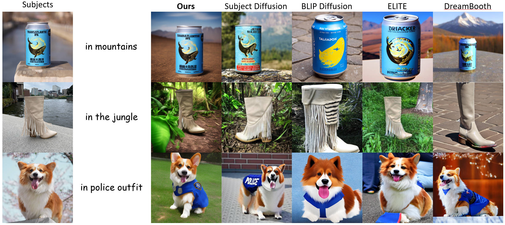

Results on DreamBench dataset

Our design showcase astonishing subjects identity preservation abilities without sacrificing text prompt adhearance, outperforms all previous competitors.
Illustration of the proposed system. Starting from Encoding and Injecting subject feature, where we extract a set of intermediate latent features during the simulated late denoising process of the given noisy subject image using our fixed Reference UNet, we then regard these features as offline Subject Guidance and inject it to the Main UNet via a learnable adapter. Then we showcase how we decouple the generation process into the Layout Generation Process and Appearance Transfer Process. We first leverage the text prompt as Text Guidance using the original text-guided diffusion process to obtain a layout latent at a middle timestep t, then we incorporate the offline Subject Guidance to transfer the subject appearance into the layout latent in the rest of the timesteps. Finally, to achieve a complete transfer, we develop the Iterative Appearance Transfer mechanism to repeat the Appearance Transfer Process by adding noise to the generated image, which continues to repeat for N times until satisfaction.
We conduct in-depth comparisons of our method against previous literatures on various tasks: namely subject-driven image generation, subject-driven image editing and human content generation task.
Our design showcase astonishing subjects identity preservation abilities without sacrificing text prompt adhearance, outperforms all previous competitors.
Our method is naturally a subject-driven editor when equipped with a foreground/background mask and image inversion, and it demonstrates outstanding performance on the DreamEditBench dataset.

Due to the high-quality feature extraction and decoupled generation technique, our method produces high-quality human face images with versatilities, WITHOUT training on domain-specific or large-scale datasets.
Based on the nature of iterative generation, our methods automatically interpolate between when using image during subject-driven editing.